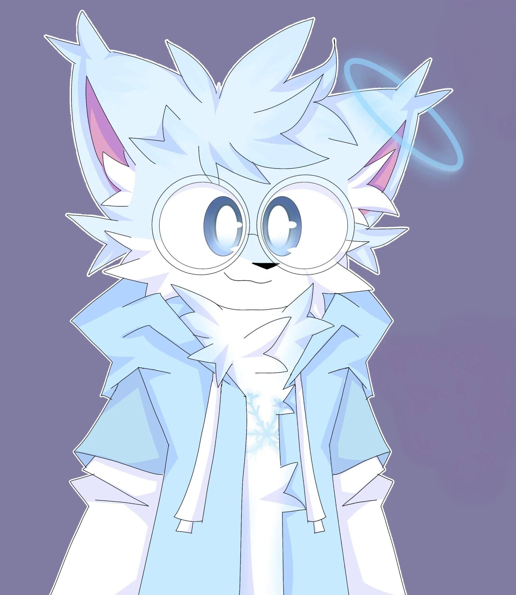
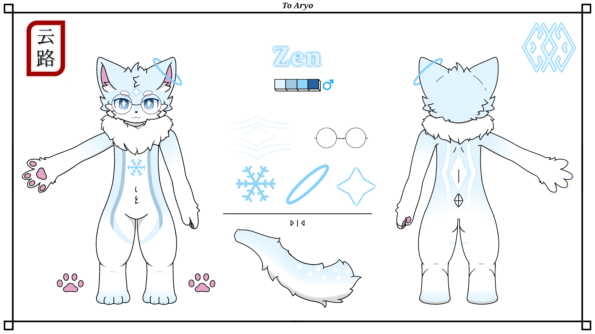
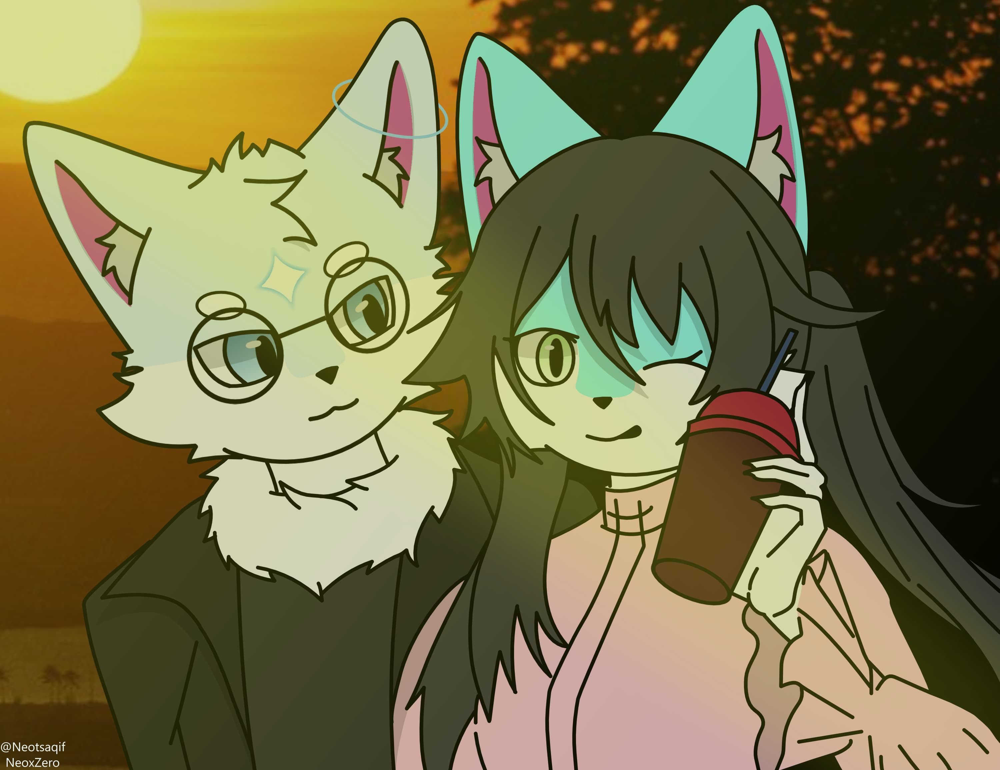
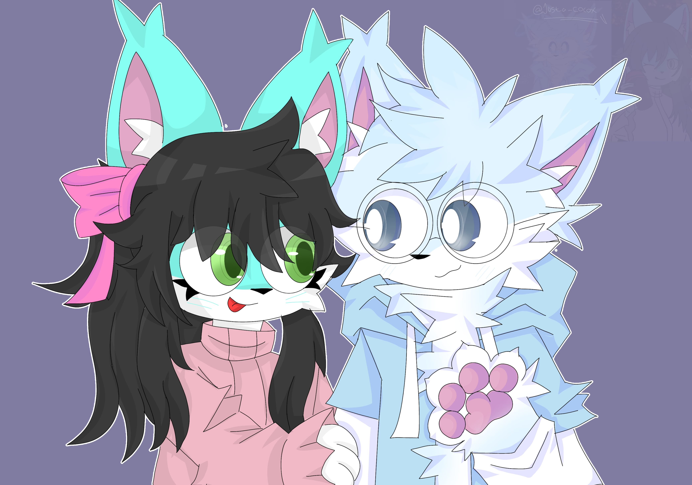

ZensFox
Introducing
This is my first website, I intend to learn more about coding like this website, so let's take a look
About Me
- Aryo
- INFJ-T
- Birthday: 26 June :v
- Speak: Indonesia/English
- Skill: Html/Coding
- Hobby: Game and Reading
- Like: Noodle, Fried Rice
- Dislike: Shrimp
Fursona

Zen
- X-7 Zen
- Name: Zen, Xuĕ xīng 雪星.
- Status: Fursona.
- Gender: Male.
- Color: white, blue, and grayish blue.
- Eyes: blue iris and white pupil.
- Age: 17-
- Race/Species: Li Shouren.
- Accessories: North Halo,glasses.
- Personality: Introvert, Intuitive, Feeling, Judging.
Lore
The pine forest in the north. Xue Xing, the only one who can withstand the freezing temperature and survive. On a certain day, Xue Xing found a blue glowing ring artifact of unknown origin and function. Carrying the object, he went further north and met Weimei, a strange woman with a blood-red butterfly in her right eye. Weimei said that the object was not supposed to be with him, but somehow it resonated well with Xue Xing. Someone appeared behind him, The Herald, allowing him to carry the object with great care. Traveling through the vast world with it until the freezing temperature in the north began to rise. The pine trees began to look greener, but wherever he went, the coldness hid in his left ear, following Xue Xing wherever he went until he returned to where he first found it. Binding him to the world and bringing eternity back to him.
Gallery
This is the project page that I'm currently working on, let's take a look
Zen in Snowfall



- 🎨 Artist: @snowtail
- 📅 Date: May 2025
- 🖌️ Tools: CSP, Wacom
- 📎 Tags: snow, winter, zen, digital